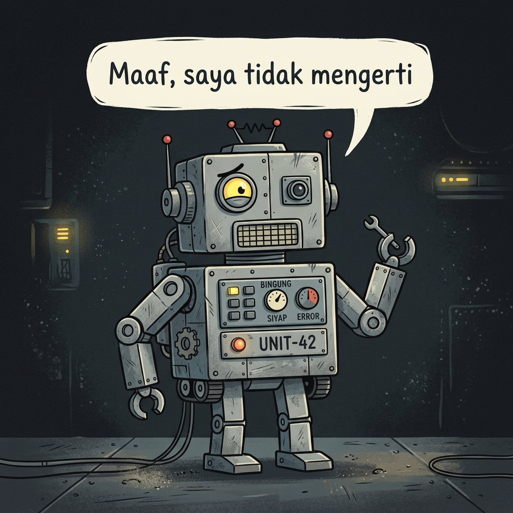
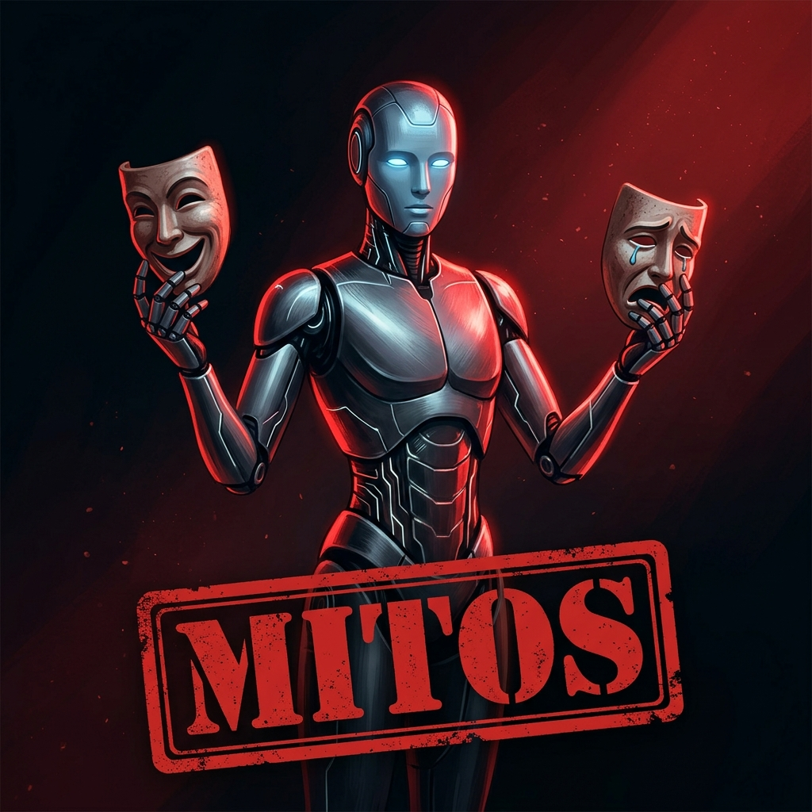

Kamu pasti sering dengar soal AI. Katanya canggih, katanya bakal ngubah dunia. Tapi apa sih itu sebenarnya? Yuk, kita bedah bareng-bareng!

Dulu, AI itu kayak asisten suara yang kaku. Cuma bisa jawab kalau ditanya "Jam berapa?" atau "Siapa presiden?". Kaku banget, kan? Pokoknya, nggak asik diajak ngobrol.
Sekarang? AI udah naik level! Dia bisa jadi temen curhat, partner nugas, sampai "chef" yang ngasih resep masakan. Cukup ketik apa maumu, dan voila!
Bayangin, semua ini cuma modal ketik!
Buku tebal jadi ringkasan dalam sekejap.
Dapet ide caption buat Instagram.
Minta jelasin rumus Fisika yang bikin pusing.

"AI-nya baik banget!" atau "Dia ngerti perasaanku!". Sering dengar gitu? Itu mitos! AI nggak punya perasaan. Dia cuma dilatih buat ngerespons seolah-olah punya emosi, kayak aktor di film.
Kenyataannya, AI itu ibarat murid yang udah baca jutaan buku. Dia nggak "ngerti" isinya, tapi dia hafal banget polanya. Jadi, dia bisa nebak kata atau gambar berikutnya dengan sangat akurat.
Proses AI menebak kata per kata...
Tahu fitur autocomplete di HP-mu? Waktu ngetik "Aku mau...", HP-mu nyaranin kata "makan". Nah, AI itu versi level dewa-nya — dia menebak dari triliunan contoh yang pernah ia "baca".
Menyerahkan laporan...
Pernah lihat temenmu jawab soal dengan super pede tapi ternyata salah total? Nah, AI juga gitu! Dia bisa ngasih jawaban yang kelihatannya rapi dan meyakinkan — padahal datanya salah atau bahkan ngarang.
Fenomena ini disebut AI Hallucination — ketika AI menghasilkan informasi yang terdengar masuk akal, tapi faktanya tidak benar.
Jangan pernah 100% percaya sama hasil AI. Anggap dia asisten pintar yang butuh bos — yaitu kamu! — buat ngecek ulang pekerjaannya. Selalu verifikasi faktanya!
Kalau AI bisa sekeren itu tapi juga bisa ngaco, terus gimana dong? Ada rahasianya, dan itu lebih gampang dari yang kamu kira.
Kamu nggak perlu takut. Kamu yang pegang joystick-nya!
Anggap AI itu jin super kuat — prompt adalah manteranya. Mantera jelek, hasilnya aneh. Mantera bagus, hasilnya luar biasa!
Kamu ketik:
"fotosintesis"
Output AI:
...jawaban teknis yang bikin pusing 😵
Kamu ketik:
"Jelaskan fotosintesis kayak lagi ngobrol sama anak SMP"
Output AI:
"Oke! Bayangin daun itu kayak pabrik mini. Bahan bakunya cuma tiga: sinar matahari, air, dan CO₂. Hasilnya? Oksigen buat kita napas! Keren kan?" 🌿
Ingat 4 bahan ini, dan kamu auto jadi "Pawang AI"!
Beri AI sebuah peran / persona
Jelaskan tugas yang spesifik
Beri tahu untuk siapa hasilnya
Minta output dalam bentuk tertentu
Guru Fisika
Detektif
Chef
Pemandu Wisata
Template:
"Jadilah seorang [Profesi] yang..."
Jangan cuma nyuruh. Suruh dia jadi "seseorang". Mau dia jadi guru Fisika yang asik? Atau penulis novel misteri? Kasih peran → jawabannya bakal lebih berkarakter!
Contoh nyata:
"Jadilah seorang pemandu wisata yang ceria. Ceritakan 3 fakta menarik tentang Candi Borobudur!"
AI nggak bisa baca pikiranmu. Kasih tugas yang super spesifik. Semakin detail, semakin bagus hasilnya!
Lihat bedanya!
Terlalu samar
"Cerita Perang Diponegoro"
→ AI bingung mau cerita versi apa, panjang berapa...
Spesifik & jelas
"Ceritakan 3 momen kunci Perang Diponegoro dalam bahasa sederhana"
→ AI langsung ngerti dan hasilnya tepat sasaran! 🎯
Kata kunci: angka, batasan, dan kata kerja aksi (buat, ceritakan, bandingkan...)
Gabungin semuanya, dan lihat bedanya!
Buat siapa?
Kasih tahu AI siapa audiensnya. AI akan otomatis menyesuaikan bahasa & tingkat kerumitannya.
Contoh:
"...untuk siswa SMA yang baru belajar"
Mau bentuk apa?
Minta output yang kamu inginkan. Jangan biarkan AI menebak-nebak format jawabannya.
Pilih salah satu:
✨ Prompt CTCF lengkap ✨
"Jadilah guru Biologi yang asik. Jelaskan proses fotosintesis untuk siswa SMA dalam bentuk 5 poin singkat."
Output AI:
...dinding teks membosankan. 😴
Output AI:
🏎️ Hukum 1 — Kelembaman: Mobil yang ngebut, butuh rem buat berhenti!
⚡ Hukum 2 — F=ma: Makin berat mobil, makin butuh tenaga besar.
🔄 Hukum 3 — Aksi-Reaksi: Knalpot nyembur ke belakang, mobil melaju ke depan!
Jelas, relatable, dan mudah diingat! 🎯
Intermezzo:
Teori cukup! Sekarang waktunya praktek. Kalian akan dibagi menjadi beberapa kelompok untuk berlomba membuat prompt terbaik. Siap?
3 Hari · Budget Terbatas
Transportasi
Penginapan
Kuliner
📋 Briefing Misi:
Rancang rencana perjalanan 3 hari di Yogyakarta untuk liburan sekolah dengan budget terbatas. Buat prompt se-kreatif & se-detail mungkin menggunakan rumus CTCF!
⏱️ Waktu Tersisa
Prompt dari kelompok mana yang paling keren?
Kelompok B
"Jadilah travel agent..."
Kelompok A
"Kamu adalah pemandu wisata budaya Jogja..."
Kelompok C
"Buat itinerary hemat..."
Bikin Reels: "Tips Belajar Efektif" — dari nol, bareng AI!
Brainstorm topik & angle konten
"Kasih 5 ide sudut pandang unik..."
Kumpulkan fakta & data pendukung
"Cari 3 teknik belajar terbukti..."
Tulis narasi & hook pembuka
"Tulis hook 5 detik yang bikin penasaran..."
Caption, hashtag, CTA siap!
"Buat caption & 10 hashtag viral..."
Step 1
Prompt ke AI:
"Kasih 5 ide sub-topik unik untuk Reels tentang Tips Belajar Efektif buat siswa SMA."
Output AI:
Teknik Pomodoro untuk fokus belajar
Cara bikin catatan yang nggak membosankan
Musik yang bikin otak lebih mudah menyerap
Belajar bareng vs. belajar sendiri
Cara istirahat yang efektif di antara sesi
Step 2
Prompt ke AI:
"Kembangkan ide #1 (Pomodoro). Beri 3 poin naskah & 1 fakta ilmiah yang wow!"
Output AI:
Hook: "25 menit fokus = otak lebih tajam dari belajar 2 jam nonstop"
Isi: Cara kerja timer Pomodoro step-by-step
CTA: "Coba sekarang & share hasilnya!"
🔬 Fakta: Studi Harvard: otak butuh jeda 5–10 mnt tiap 25 mnt untuk konsolidasi memori.
Step 3
"Kasih ide visual/adegan untuk tiap poin naskah Pomodoro tadi, gaya Reels kekinian."
Adegan 1: Close-up timer HP countdown 25:00 di meja belajar
Adegan 2: Time-lapse nulis catatan dengan pensil warna-warni
Adegan 3: Grafik perbandingan sebelum & sesudah pakai Pomodoro
Step 4
"Buatkan 3 alternatif caption IG yang catchy + 10 hashtag relevan."
"Udah berjam-jam belajar tapi nggak masuk-masuk? 😩 Coba teknik ini! ✨"
"Rahasia nilai A yang gurumu nggak pernah kasih tau 🤫📚"
AI bukan cuma menjawab — ia membantumu berpikir terstruktur dari awal sampai akhir.
Ide
Riset
Visual
Posting!
"AI membantumu berpikir lebih cepat, bukan menggantikan pikiranmu."
Key Takeaway
Jalan yang Benar
Minta AI jelasin konsep yang belum kamu ngerti
Pakai AI buat cari ide awal, lalu kembangkan sendiri
Minta AI review tulisanmu dan kasih feedback
Gunakan AI untuk latihan soal dan simulasi ujian
Hasilnya: otakmu makin tajam dan skill-mu terus naik! 📈
Jalan yang Salah
Copy-paste jawaban AI tanpa baca & pahami
Submit tugas AI langsung sebagai milikmu
Nggak pernah coba berpikir sendiri karena males
Percaya 100% tanpa verifikasi fakta
Hasilnya: otakmu nggak berkembang — bunuh diri pelan-pelan! ☠️
Budi memakai AI untuk memperbaiki esai Bahasa Inggrisnya. Hasilnya sempurna — tapi Budi tidak 100% paham isinya.
Nilai sempurna
"Submit esai AI langsung. Dapet nilai bagus. Tapi... saat ujian lisan, Budi nggak bisa jelasin isinya."
Menyontek atau Kerja Cerdas?
Nilai cukup
"Pakai AI sebagai referensi, tulis ulang dengan kata sendiri, pahami setiap kalimat. Nilainya B, tapi otaknya bersinar."
Yang ini jelas lebih baik!
Tim
"AI adalah alat. Yang penting hasilnya, dan kita belajar darinya."
Tim
"Kalau kamu nggak paham isinya, itu bukan karya kamu."
VS
Tidak ada jawaban benar atau salah — yang penting: berpikir kritis!
Pakai AI buat ideasi & kerangka. Tapi hasil akhir = karya kamu sendiri!
AI
Sumber Ide
💡 Ide & Kerangka
Otak Kamu
🤔 Proses & Pahami
Karya Kamu
📄 Hasil Otentik
Sukses!
"Otentisitas itu nomor satu. AI boleh bantu berpikir, tapi kamu yang harus memutuskan."
Tanpa AI — kerja keras, effort besar, hasil biasa
Pertanyaan yang salah:
"AI vs Manusia?"
Yang Benar:
"Kamu + AI
vs yang lain"
Sama effort, tapi hasil 10x lebih besar & lebih cepat
"It's not AI vs Human. It's Human + AI vs Human without AI."
Selamat! Kamu sekarang bukan cuma pengguna biasa — tapi Pawang AI. Kamu tahu cara kerjanya, tahu bahayanya, dan yang paling penting, tahu cara mengendalikannya.
Masa depan ada di tanganmu.
Gunakan kekuatan ini dengan bijak! ✨
Waktunya tanya jawab! Jangan malu-malu — tanyain apa aja yang bikin penasaran soal AI, prompt, atau apapun! 🙋